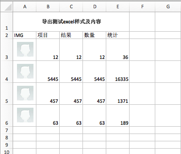

CI 框架整合 PHPExcel
(本地开发环境下进行： CI 3.x + PHPExcel 1.8)
1、下载 PHPExcel 1.8
下载地址：https://archive.codeplex.com/?p=phpexcel
2、解压，拷贝有效文件及文件夹
2-1、将解压后的文件夹里的Classes文件夹里面的所有文件和文件夹放到application\libraries\目录下，目录结构如下：
application\libraries\PHPExcel.php
application\libraries\PHPExcel\
2-2、修改application\libraries\PHPExcel\IOFactory.php 文件
1）将其类名从PHPExcel_IOFactory改为IOFactory，遵从CI类命名规则。
2）将其构造函数改为public
3、代码整合范例
3-1、导出
先看下效果截图：

控制器代码：
public function ExcelExport(){
$this->load->library('PHPExcel');
$this->load->library('PHPExcel/IOFactory');
$objPHPExcel = new PHPExcel();
// 设置sheet标签
$objPHPExcel->setActiveSheetIndex(0);
// 设置sheet的name
$objPHPExcel->getActiveSheet()->setTitle('测试sheet');
// 合并单元格
$objPHPExcel->getActiveSheet()->mergeCells('A1:E1');
// 设置行高
$objPHPExcel->getActiveSheet()->getRowDimension('1')->setRowHeight(40);
// 自动行高
$objPHPExcel->getActiveSheet()->getDefaultRowDimension()->setRowHeight(-1);
// 设置水平居中
$objPHPExcel->getActiveSheet()->getStyle('A1')->getAlignment()->setHorizontal(PHPExcel_Style_Alignment::HORIZONTAL_CENTER);
//设置垂直居中
$objPHPExcel->getActiveSheet()->getStyle('A1')->getAlignment()->setVertical(PHPExcel_Style_Alignment::VERTICAL_CENTER);
// 设置加粗
$objPHPExcel->getActiveSheet()->getStyle('A1')->getFont()->setBold(true);
//设置当前的sheet
$objPHPExcel->getActiveSheet()->setCellValue('A1', '导出测试excel样式及内容');
$objPHPExcel->getActiveSheet()->setCellValue('A2', 'IMG');
$objPHPExcel->getActiveSheet()->setCellValue('B2', '项目');
$objPHPExcel->getActiveSheet()->setCellValue('C2', '结果');
$objPHPExcel->getActiveSheet()->setCellValue('D2', '数量');
$objPHPExcel->getActiveSheet()->setCellValue('E2', '统计');
$i = 3;
$m_data = ['12', '5445', '457', '63'];
foreach($m_data as $key => $value){
// 设置行高
$objPHPExcel->getActiveSheet()->getRowDimension($i)->setRowHeight(45);
$objPHPExcel->getActiveSheet()->getDefaultColumnDimension('A'.$i)->setWidth(8);
// 图片生成
$imgPath = PUBLIC_IMG_RESOURCE_PATH . 'default-user.jpg';
$objDrawing = new PHPExcel_Worksheet_Drawing();
$objDrawing->setPath($imgPath);
// 设置宽度高度
$objDrawing->setHeight(40);//照片高度
$objDrawing->setWidth(40); //照片宽度
/*设置图片要插入的单元格*/
$objDrawing->setCoordinates('A'.$i);
// 图片偏移距离
$objDrawing->setOffsetX(10);
$objDrawing->setOffsetY(10);
$objDrawing->setWorksheet($objPHPExcel->getActiveSheet());
$objPHPExcel->getActiveSheet()->setCellValue('B' . $i, $value);
$objPHPExcel->getActiveSheet()->setCellValue('C' . $i, $value);
$objPHPExcel->getActiveSheet()->setCellValue('D' . $i, $value);
$objPHPExcel->getActiveSheet()->setCellValue('E' . $i, '=SUM(B'.$i.':D'.$i.')');
$i ++;
}
$outputFileName = time().".xls";
$xlsWriter = new PHPExcel_Writer_Excel5($objPHPExcel);
header("Content-Type: application/force-download");
header("Content-Type: application/octet-stream");
header("Content-Type: application/download");
header('Content-Disposition:inline;filename="'.$outputFileName.'"');
header("Content-Transfer-Encoding: binary");
header("Expires: Mon, 26 Jul 1997 05:00:00 GMT");
header("Last-Modified: " . gmdate("D, d M Y H:i:s") . " GMT");
header("Cache-Control: must-revalidate, post-check=0, pre-check=0");
header("Pragma: no-cache");
$xlsWriter->save( "php://output" );
}
3-2、导入
控制器代码：
public function ExcelImport(){
//加载工厂类
$this->load->library('PHPExcel/IOFactory');
//要读取的xls文件路径
$inputFileName = PUBLIC_FILE_RESOURCE_PATH . 'listTest/userListTest.xlsx';
/** 用PHPExcel_IOFactory的load方法得到excel操作对象 **/
$objPHPExcel = IOFactory::load($inputFileName);
//得到当前活动表格，调用toArray方法，得到表格的二维数组
$sheetData = $objPHPExcel->getActiveSheet()->toArray(null,true,true,true);
$sheet = $objPHPExcel->getActiveSheet(); // 当前活动表格
$highestRow = $sheet -> getHighestRow(); // 取得总行数
$highestColumn = $sheet->getHighestColumn(); // 取得总列数(格式：'AA')
$columns = PHPExcel_Cell::columnIndexFromString($highestColumn); // 将数据总列数(格式：'AA')转换成数字列数(格式：27)表示
// 处理转换成可以存入数据库表中的数据
$newData = [];
for($currentRow = 2; $currentRow <= $highestRow; $currentRow++){
$rowData = [];
foreach($sheetData[1] as $key => $currentColumn){
$rowData[$currentColumn] = $sheetData[$currentRow][$key]; //$objPHPExcel->getActiveSheet()->getCell($key.$currentRow)->getValue();
}
$newData[] = $rowData;
}
// 插入数据
$res = $this->userModel->import_user($newData);
if(!$res){
$this->ajax_return('500', 'Import Failed!');
}
$this->ajax_return('200', 'Import Success!');
}